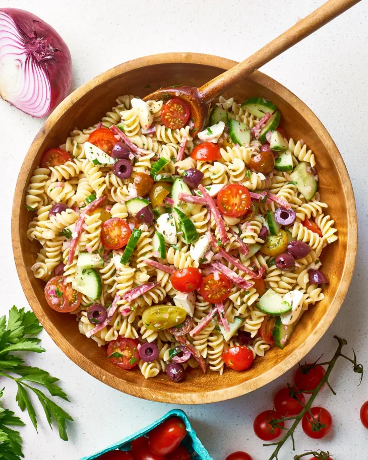

Pasta Salad

Description
Pasta salad (pasta fredda) is a salad dish prepared with one or more types of pasta, almost always chilled, and most often tossed in a vinegar, oil, or mayonnaise-based dressing. It is typically served as an appetizer, side dish or a main course. Pasta salad is often regarded as a spring or summertime meal, but it can be served any time of year.
Ingredients
- Pasta: This colorful, top-rated pasta salad starts with one pound of tri-colored spiral pasta.
- Dressing: Use a bottle of store-bought Italian-style dressing or, if you want to go the extra mile, make your own at home.
- Seasoning mix: Salad seasoning mix lends tons of savory flavor.
- Vegetables: You'll need cherry tomatoes, three bell peppers (green, yellow, and red), and a can of black olives.
Steps
- Gather all ingredients.
- Bring a large pot of lightly salted water to a boil. Cook pasta in the boiling water, stirring occasionally, until tender yet firm to the bite, about 10 to 12 minutes; rinse under cold water and drain.
- Whisk Italian dressing and salad spice mix together until smooth. Combine pasta, tomatoes, bell peppers, and olives in a salad bowl.
- Pour dressing over salad and toss to coat.
- Refrigerate salad, 8 hours to overnight.
- Enjoy!